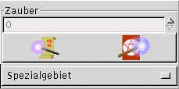
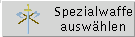
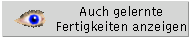

(Mit der Maus auswählen)

| In der untersten Zeile Bewinden sich zwei Pfeile, mit denen Lernpunkte für Fachkenntnisse und Waffen zu Lernpunkten für Ungewöhnliche Fertigkeiten gewandelt werden können. | |
|  | Zusätzlich befindet sich noch ein Auswahl-Button für das Spezielgebiet eines Magiers in dieser Zeile, wenn der Abenteurer ein Magier ist. Bei anderen Abenteurertypen ist dieser Button nicht sichtbar. |
| Die jeweiligen Lernschemata lassen sich mit Hilfe ihres jeweiligen Buttons auswählen. Die zum jeweiligen Schema gehörenden Fähigeiten erscheinen im rechten, dem Auswahlfenster. Es werden nur Fertigkeiten angezeigt, dernen Voraussetzungen erfüllt sind und für deren Erwerb ausreichend Lernpunkte vorhanden sind. Bereits erworbene Fertigkeiten werden im linken Fenster aufgelistet |
 |
| Fachkenntnisse: Zur Auswahl stehen die erlernbaren Fachkenntnisse. |
|
|
|
Allgemeine Fertigkeiten Die verfügbaren Allgemeinen Fertigkeiten. |
| Ungewöhnliche Fertigkeiten Auswahl de Ungewöhnlichen Fertigkeiten. |
|
| Waffenfertigkeiten: Die erlernbaren Waffenfertigkeiten. |
|
| Zauber: Die erlernbaren Zauber. |
|  | Spezialwaffe auswählen Dieser Button ermöglicht es, bestimmten Abenteurertypen, eine Spezialwaffe auszuwählen. |
Die Optionsbuttons ermöglichen es, die Anzeige im Auswahlfenster der Fertigkeiten zu beeinflussen:
|  | Auch gelernte Fertigkeiten anzeigen: Mit diesem Butten können bereits gelernte Fertigkeiten im Auswahlfenster angezeigt bzw. ausgeblendet werden. |
| Auch Fertigkeiten anzeigen, die zu teuer sind: Mit diesem Button können Fertigkeiten angezeigt werden, deren Lernkosten höher als die vorhanden Lernpunkte sind. Dies ist bei Ungewöhnlichen Fertigkeiten sinnvol, da hierhin Lernpunkte übertragen werden können. |